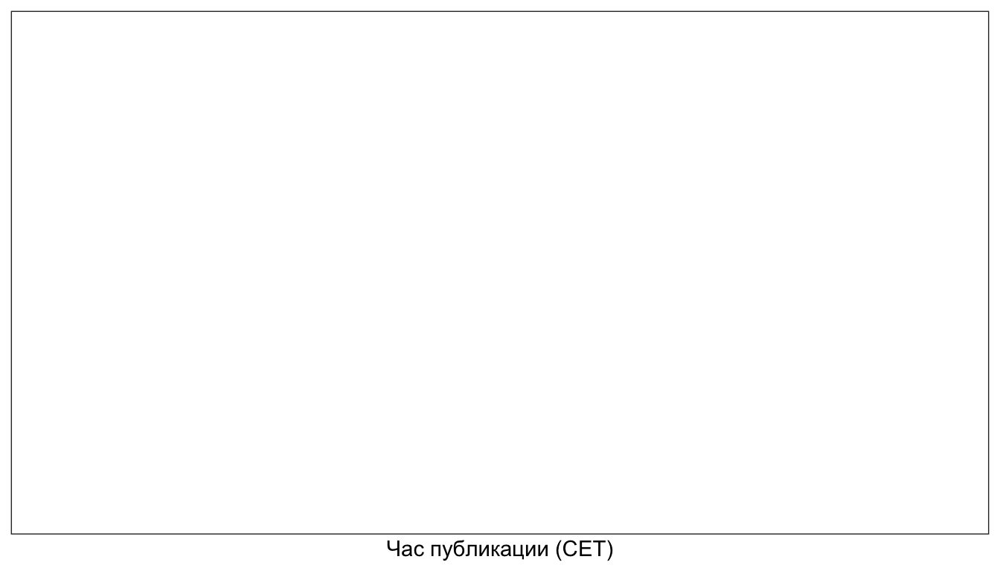
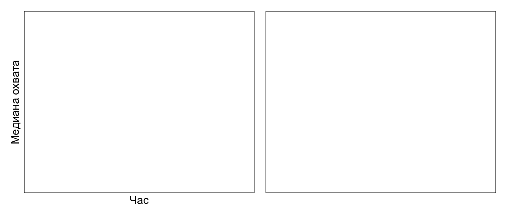
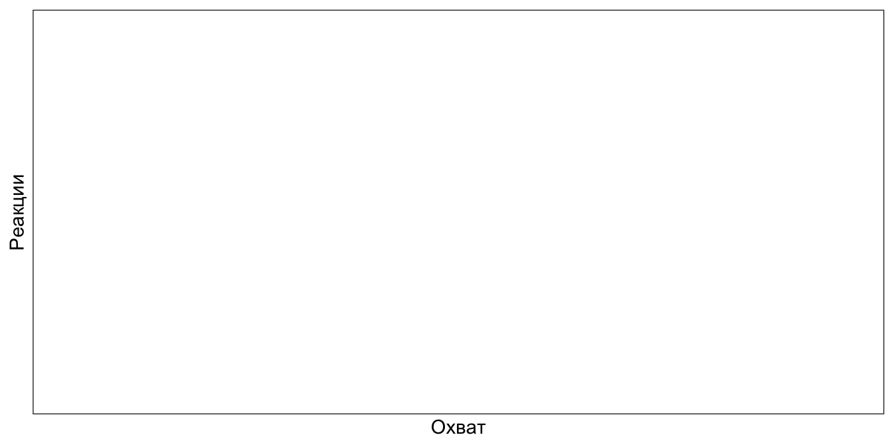
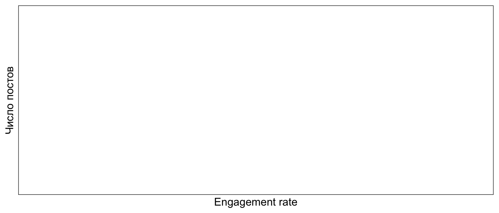

library(tidyverse)
library(lubridate)
library(jsonlite)
library(scales)
library(patchwork)
`%||%` <- function(x, y) if (is.null(x)) y else xКак получить данные
Telegram Desktop → название канала → ⋮ → Export chat history
В настройках экспорта: - Формат: JSON (не HTML) - Снять галочки с медиафайлов — нам нужен только текст - Диапазон: всю историю
В папке экспорта появится result.json. Положите его рядом с этим .qmd.
Структура файла
{
"name": "stats_for_science",
"messages": [
{
"id": 42,
"type": "message",
"date": "2024-03-15T19:30:00",
"text": "Привет! Сегодня разберём...",
"views": 1347,
"forwards": 12,
"reactions": [
{"type": "👍", "count": 28},
{"type": "❤", "count": 14}
],
"text_entities": [
{"type": "pre", "text": "ggplot(...)"}
]
}
]
}Поле text бывает строкой или массивом (если в тексте есть форматирование) — это главная неприятность при парсинге.
Загружаем данные в R
Функции парсинга работают с реальным result.json. Если файла нет рядом, скрипт сгенерирует правдоподобные данные, чтобы всё рендерилось:
# text: строка или список {type, text} → одна строка
flatten_text <- function(x) {
if (is.null(x) || length(x) == 0) return(NA_character_)
if (is.character(x)) return(x)
parts <- map_chr(x, \(p) {
if (is.character(p)) p
else if (is.list(p) && !is.null(p$text)) p$text
else ""
})
str_c(parts, collapse = "")
}
# reactions: [{type, count}, ...] → суммарное число реакций
total_reactions <- function(r) {
if (is.null(r) || length(r) == 0) return(0L)
sum(map_int(r, \(x) as.integer(x[["count"]] %||% 0L)))
}
# text_entities: есть ли блок кода?
has_code <- function(ents) {
if (is.null(ents) || length(ents) == 0) return(FALSE)
any(map_chr(ents, \(e) e[["type"]] %||% "") %in% c("pre", "code"))
}
# основная функция чтения экспорта
read_tg_export <- function(path = "result.json") {
raw <- read_json(path)
msgs <- raw$messages
map_dfr(msgs, \(m) {
if (!identical(m$type, "message")) return(NULL)
tibble(
id = as.integer(m$id %||% NA),
date = ymd_hms(m$date %||% NA_character_),
text = flatten_text(m$text),
views = as.integer(m$views %||% 0L),
forwards = as.integer(m$forwards %||% 0L),
reactions = total_reactions(m$reactions),
has_code = has_code(m$text_entities),
media = !is.null(m$media_type)
)
})
}# Используем реальный экспорт если есть, иначе — симуляцию
if (file.exists("result.json")) {
df <- read_tg_export("result.json")
cat("Загружен реальный экспорт\n")
} else {
df <- simulate_channel()
cat("result.json не найден — используем симулированные данные\n")
}Загружен реальный экспорт# Добавляем производные переменные
df <- df |>
filter(!is.na(date), !is.na(views), views > 0) |>
mutate(
er = reactions / views, # engagement rate
hour = hour(date),
weekday = wday(date, label = TRUE, abbr = TRUE, week_start = 1),
month = floor_date(date, "month"),
year = year(date),
text_len = str_length(text %||% "")
)Общая картина
R-код
period <- paste0(
format(min(df$date), "%B %Y"), " — ", format(max(df$date), "%B %Y")
)
tibble(
Показатель = c(
"Постов", "Период", "Медианный охват", "Средний охват",
"Медиана реакций", "Медиана ER", "Постов с кодом",
"Всего реакций", "Всего просмотров"
),
Значение = c(
nrow(df),
period,
comma(median(df$views, na.rm = TRUE), accuracy = 1),
comma(mean(df$views, na.rm = TRUE), accuracy = 1),
comma(median(df$reactions), accuracy = 1),
percent(median(df$er, na.rm = TRUE), accuracy = .1),
paste0(sum(df$has_code), " (", percent(mean(df$has_code)), ")"),
comma(sum(df$reactions)),
comma(sum(df$views))
)
) |>
knitr::kable(align = c("l", "r"))| Показатель | Значение |
|---|---|
| Постов | 0 |
| Период | Inf — -Inf |
| Медианный охват | NA |
| Средний охват | NA |
| Медиана реакций | NA |
| Медиана ER | NA |
| Постов с кодом | 0 (NA) |
| Всего реакций | 0 |
| Всего просмотров | 0 |
Когда лучше постить?
R-код
hm <- df |>
group_by(weekday, hour) |>
summarise(avg_views = mean(views), n = n(), .groups = "drop")
ggplot(hm, aes(x = hour, y = fct_rev(weekday), fill = avg_views)) +
geom_tile(colour = "white", linewidth = .6) +
geom_text(
data = filter(hm, n >= 3),
aes(label = comma(avg_views, accuracy = 1)),
size = 2.6, colour = "white", fontface = "bold"
) +
scale_fill_gradient(
low = "#d0e8f5", high = "#185FA5",
labels = comma, na.value = "grey90"
) +
scale_x_continuous(
breaks = seq(0, 23, 3),
labels = \(x) paste0(x, ":00")
) +
labs(x = "Час публикации (CET)", y = NULL, fill = "Охват") +
theme_bw() +
theme(panel.grid = element_blank())
R-код
p_hour <- df |>
group_by(hour) |>
summarise(med = median(views), n = n()) |>
ggplot(aes(x = hour, y = med)) +
geom_col(fill = "#185FA5", alpha = .8, width = .85) +
scale_x_continuous(breaks = seq(0, 23, 3),
labels = \(x) paste0(x, ":00")) +
scale_y_continuous(labels = comma) +
labs(x = "Час", y = "Медиана охвата") +
theme_bw()
p_wd <- df |>
group_by(weekday) |>
summarise(med = median(views)) |>
ggplot(aes(x = weekday, y = med)) +
geom_col(fill = "#534AB7", alpha = .8, width = .65) +
scale_y_continuous(labels = comma) +
labs(x = NULL, y = NULL) +
theme_bw()
p_hour | p_wd
Что залетает?
R-код
df |>
ggplot(aes(x = views, y = reactions, colour = has_code, size = forwards + 1)) +
geom_point(alpha = .55) +
scale_colour_manual(
values = c("TRUE" = "#D85A30", "FALSE" = "#185FA5"),
labels = c("TRUE" = "с кодом", "FALSE" = "без кода")
) +
scale_x_continuous(labels = comma) +
scale_size_continuous(range = c(1.5, 7), guide = "none") +
geom_smooth(aes(group = 1), method = "lm", se = FALSE,
colour = "grey40", linewidth = .8, linetype = "dashed") +
labs(x = "Охват", y = "Реакции", colour = NULL) +
theme_bw() +
theme(legend.position = "bottom")
R-код
df |>
filter(er < quantile(er, .99, na.rm = TRUE)) |> # убираем выбросы
mutate(type = if_else(has_code, "С кодом", "Без кода")) |>
ggplot(aes(x = er, fill = type)) +
geom_histogram(bins = 30, alpha = .75, position = "identity") +
geom_vline(
data = df |>
mutate(type = if_else(has_code, "С кодом", "Без кода")) |>
group_by(type) |> summarise(med = median(er, na.rm = TRUE)),
aes(xintercept = med, colour = type),
linetype = "dashed", linewidth = 1
) +
scale_fill_manual(values = c("С кодом" = "#D85A30", "Без кода" = "#185FA5")) +
scale_colour_manual(values = c("С кодом" = "#D85A30", "Без кода" = "#185FA5")) +
scale_x_continuous(labels = percent) +
labs(x = "Engagement rate", y = "Число постов",
fill = NULL, colour = NULL) +
theme_bw() +
theme(legend.position = "bottom")
R-код
# Статистически значима ли разница?
# wilcox.test(er ~ has_code, data = df) |>
# broom::tidy() |>
# select(statistic, p.value, method) |>
# mutate(p.value = format.pval(p.value, digits = 3)) |>
# knitr::kable(caption = "Тест Вилкоксона: ER у постов с кодом vs без")R-код
df |>
filter(text_len > 0, text_len < quantile(text_len, .99, na.rm = TRUE)) |>
ggplot(aes(x = text_len, y = views)) +
geom_point(alpha = .35, colour = "#185FA5", size = 1.8) +
geom_smooth(method = "loess", se = TRUE, colour = "#D85A30",
fill = "#D85A30", alpha = .15) +
scale_y_continuous(labels = comma) +
scale_x_continuous(labels = comma) +
labs(x = "Длина текста (символов)", y = "Охват") +
theme_bw()
Рост канала
R-код
monthly <- df |>
group_by(month) |>
summarise(
med_views = median(views),
avg_views = mean(views),
n_posts = n(),
.groups = "drop"
)
ggplot(monthly, aes(x = month)) +
geom_ribbon(aes(ymin = med_views, ymax = avg_views),
fill = "#185FA5", alpha = .12) +
geom_line(aes(y = avg_views), colour = "#185FA5",
linewidth = .9, linetype = "dashed") +
geom_line(aes(y = med_views), colour = "#185FA5", linewidth = 1.2) +
geom_point(aes(y = med_views, size = n_posts), colour = "#185FA5") +
scale_y_continuous(labels = comma) +
scale_size_continuous(range = c(2, 6)) +
labs(x = NULL, y = "Охват", size = "Постов",
caption = "Сплошная — медиана, пунктир — среднее") +
theme_bw() +
theme(legend.position = "bottom")
R-код
monthly |>
ggplot(aes(x = month, y = n_posts)) +
geom_col(fill = "#534AB7", alpha = .8, width = 25) +
geom_hline(yintercept = mean(monthly$n_posts), linetype = "dashed",
colour = "#D85A30") +
scale_y_continuous(breaks = seq(0, 20, 4)) +
labs(x = NULL, y = "Постов в месяц",
caption = paste0("В среднем: ", round(mean(monthly$n_posts), 1), " поста/мес.")) +
theme_bw()
Топ-10 постов
R-код
df |>
slice_max(reactions, n = 10) |>
arrange(desc(reactions)) |>
transmute(
Дата = format(date, "%d.%m.%Y"),
Охват = comma(views, accuracy = 1),
Реакции = comma(reactions, accuracy = 1),
Репосты = comma(forwards, accuracy = 1),
ER = percent(er, accuracy = .1),
Код = if_else(has_code, "✓", ""),
Текст = str_trunc(coalesce(text, "[медиа]"), 65)
) |>
knitr::kable(align = c("l","r","r","r","r","c","l"))| Дата | Охват | Реакции | Репосты | ER | Код | Текст |
|---|
Распределение охвата
R-код
q25 <- quantile(df$views, .25)
q75 <- quantile(df$views, .75)
med <- median(df$views)
ggplot(df, aes(x = views)) +
geom_histogram(bins = 40, fill = "#185FA5", alpha = .75, colour = "white") +
annotate("rect", xmin = q25, xmax = q75, ymin = -Inf, ymax = Inf,
fill = "#185FA5", alpha = .12) +
geom_vline(xintercept = med, linetype = "dashed",
colour = "#D85A30", linewidth = 1) +
annotate("text", x = med * 1.05, y = Inf,
label = paste0("медиана\n", comma(med)),
vjust = 1.4, hjust = 0, size = 3.2, colour = "#D85A30") +
scale_x_continuous(labels = comma) +
labs(x = "Охват", y = "Постов") +
theme_bw()
Дополнительно: TGStat API
Альтернативный путь — если канал трекается на tgstat.ru:
library(httr2)
tgstat_posts <- function(channel = "@stats_for_science",
token = Sys.getenv("TGSTAT_TOKEN"),
limit = 50) {
request("https://api.tgstat.ru/channels/posts") |>
req_url_query(
token = token,
channelId = channel,
limit = limit,
extended = 1
) |>
req_perform() |>
resp_body_json() |>
pluck("response", "items") |>
map_dfr(\(p) tibble(
id = p$id,
date = as_datetime(p$date),
views = p$views %||% 0L,
forwards = p$forwards %||% 0L,
reactions = p$reactions %||% 0L
))
}
# Токен получить на: https://api.tgstat.ru/ (бесплатный тариф)
# Положить в .Renviron: TGSTAT_TOKEN=ваш_токен
df_tgstat <- tgstat_posts()
NoteСледующий шаг
Превратить этот анализ в автоматический Quarto-отчёт: quarto render telegram_analysis.qmd в cron раз в неделю → свежий HTML с актуальной статистикой прямо в репозитории.